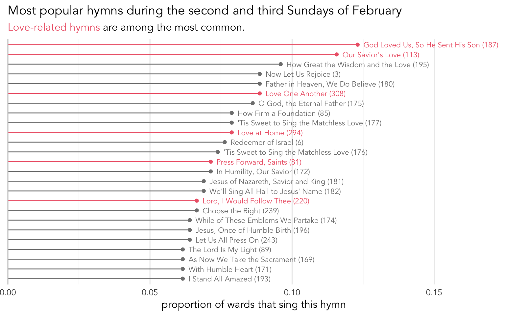
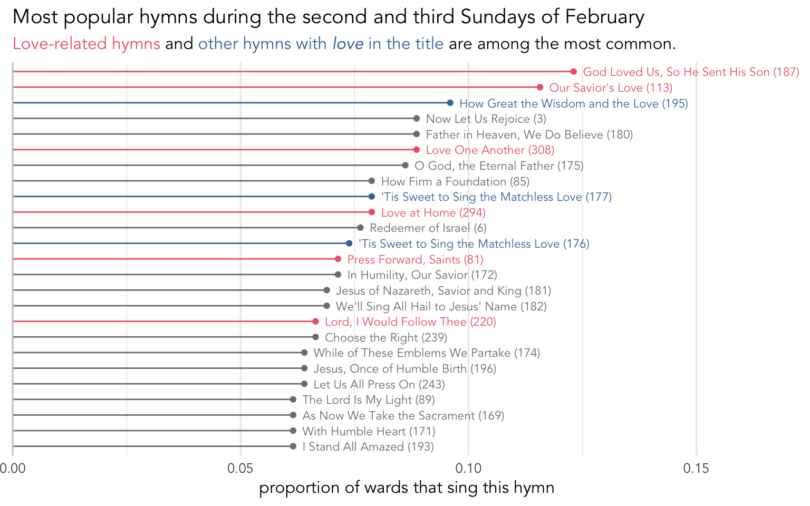

Are there any Valentine’s Day hymns?
holidays
frequency
Anyone who has been to Walmart at all since December 26th will know that the next major holiday in the United States is Valentine’s Day. It’s only kind of a Christian holiday and it’s not one that, as far as I know, we officially recognize in the church. However, many wards do tend to sing hymns around Valentine’s Day. This blog post explores what hymns are sung around the second and third Sundays in February in the United States. I’m working with 710 sacrament meetings’ worth of data.
What are the Valentine’s Day hymns?
Officially, there’s not a “love” section of the hymnal, but there is a healthy list of 28 hymns under the “Love” entry in the Topics index in the back of the hymnal. A good portion of them are in the 292–313 range, mixed in with the home-related and children’s hymns. The question though is whether people draw from that list around Valentine’s Day.
Figure 1 shows the most commonly sung hymns during the second and third Sundays of February in the United States. Those that are in the “Love” entry of the Topics index are higlighted in red. As you can see, no hymn is extremely popular around this time. The most common is
Some of the other most common ones are unsurprising to me:
Overall though, of the 25 or so hymns that are listed here, only 6 of them are among the 28 “official” love hymns listed in the Topic index. This to me suggests that people aren’t really drawing from that list very often. In fact, it seems like a lot of people are basing their decision on simply whether the title of the hymn contains the word love. There are 16 hymns that have some form of the word love in the title (15 if you ignore the women’s arrangement of

Now, we can see that there are another three hymns that are common around this time of the year, all of which are sacrament hymns. In total, about 15.3% of hymns sung around Valentine’s Day are from the “official” list of love hymns, with another 5.0% being from one of these other nine hymns with love in their titles. That means a little over 20% of the hymns sung in the United States between February 8 and February 20 are arguably Valentine’s Day–related hymns. Not bad for a secular holiday.
How many wards sing Valentine’s Day hymns?
If roughly 20% of hymns around this time of year are Valentine’s Hymns, how many wards sing those hymns? The following table shows how many love hymns are sung per meeting. Here, what I consider a Valentine’s Day hymn is one that is part of the Love entry in the Topics index or that contains the word love in the title.
| love hymns per meeting | number of wards | percent |
|---|---|---|
| 0 | 369 | 52.1% |
| 1 | 228 | 32.2% |
| 2 | 65 | 9.2% |
| 3 | 37 | 5.2% |
| 4 | 9 | 1.3% |
As you can see, just over half of wards don’t sing Valentine’s Day hymns. But, that means almost half of wards do! About a third of wards sing one Valentine’s Day hymn, 9.2% sing two, 5.2% sing three, and nine wards swept the meeting with four Valentine’s Day hymns. An example of one such meeting comes from a ward in Houston Texas in 2017: they sang
So, while only 20% of hymns sung around Valentine’s Day are Valentine’s Day hymns, nearly half of all wards in the United States sing at least one of them.
The most quintessential Valentine’s Day hymns
We’ve already established that there are about 37 love-related hymns that could be considered Valentine’s Day hymns. And we’ve seen that many of them are also about families, children, or the sacrament. The question we can ask then is this: what is the most quintessential Valentine’s Day hymn? By that, I mean which hymn is sung the most around Valentine’s Day and not sung much during the rest of the year. I’ve already written about sacrament hymns and hymns around the Primary program (which is when we see the most children’s hymns being sung), and in future posts I’ll write about Mother’s Day and Father’s day, so I’ll only gloss over details relevant to those topics here.
For now, let’s look at the distribution of those Valentine’s Day hymns across the year. I’ve highlighted the weeks most relevant to Valentine’s Day in pink. Figure 3 shows those annual trends.
There are a few things to point out. One is that many of these hymns are quite infrequent, so they have very low numbers throughout the year. Sacrament hymns are common and most don’t show much as far as annual trends, so their numbers are higher and more varied but without much of a pattern, though some of the ones here show a slight increase in frequency in the pink shaded region. Hymns related to fasting show spikes near the beginning of each month. And hymns related to the home and family have much stronger spikes around Mother’s Day and/or Father’s Day.
The ones I want to draw your attention to are those that appear to have their strongest spikes around Valentine’s Day. The strongest of these are
Conclusion
To conclude, about 50% of wards sing at least one love-related hymn around Valentine’s Day. The most common of these hymns includes sacrament hymns like